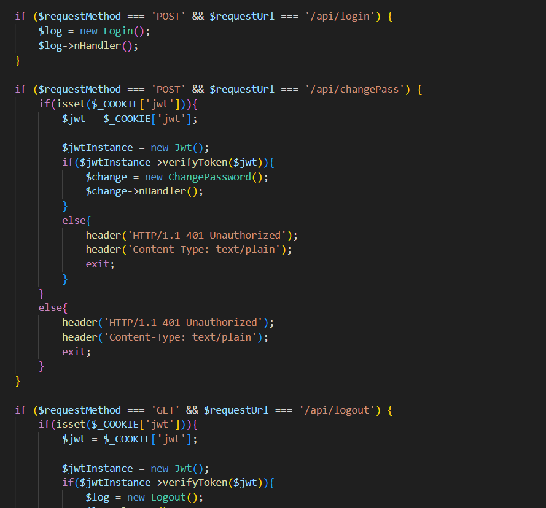
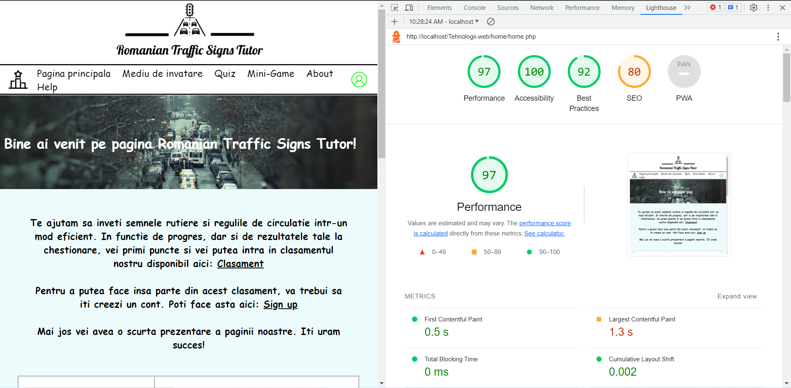
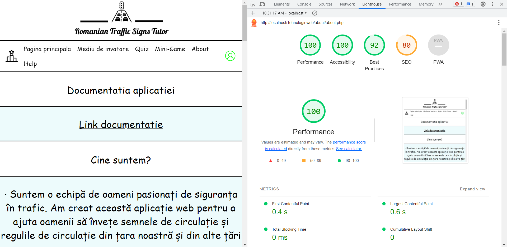
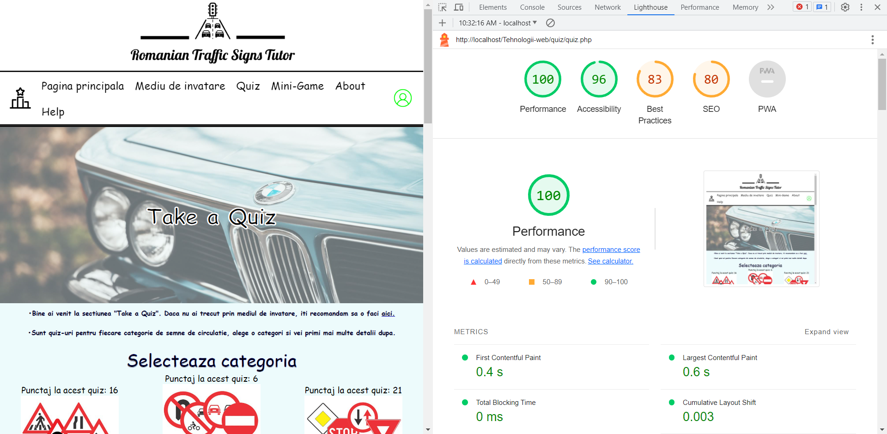
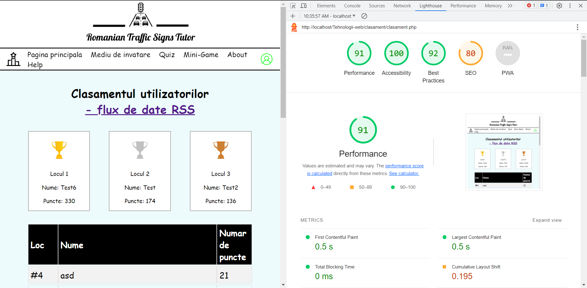
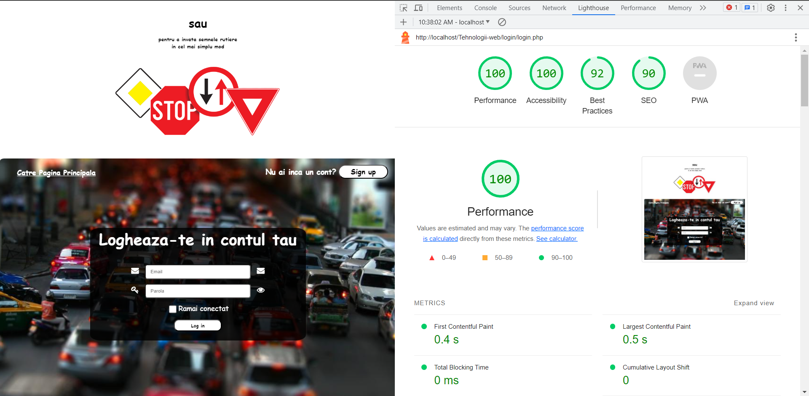

1. Cerinta
Sa se dezvolte o aplicatie Web care pe baza unui API Web REST/GraphQL ofera suport pentru invatarea semnelor rutiere si a regulilor de circulatie
din tara noastra si altele europene. Pentru fiecare (categorie de) semne, se vor pune la dispozitie informatii precum
semnificatia, tipul, regulamentele in vigoare, relatii cu alte semne de interes, sfaturi practice, contextul de utilizare,
plus sugestii privind comportamentul soferului/pietonului. Via strategii ludice (e.g., gamification), solutia realizata va
monitoriza progresul inregistrat de fiecare utilizator in procesul de invatare, eventual structurata pe niveluri de
dificultate. Se va genera, de asemenea, un clasament al celor mai sarguinciosi utilizatori, disponibil si ca flux de date RSS.
2. Introducere
Invatarea semnelor si regulilor de circulatie este importanta nu numai pentru obtinerea permisului de conducere, ci chiar si
pentru oamenii care nu planuiesc sustinerea acestui examen in viitorul apropiat. Prin invatarea indicatoarelor si regulilor rutiere,
vei sti cum sa actionezi in anumite situatii, deoarece multe indicatoare si reguli se adreseaza chiar si pietonilor sau biciclistilor.
Consideram ca aceasta invatare este importanta, de aceea ne propunem sa realizam o aplicatie web care sa ajute oamenii sa
invete indicatoarele si regulile rutiere intr-un mod simplu.
3. Structura aplicatiei
Aplicatia web este structurata in 7 pagini principale: Clasament, Pagina Principala, Mediu de invatare, About, Help, Login, Sign up
si contine cate o alta pagina pentru fiecare categorie de semne.
3.1 Pagina principala
Aici se gasesc principalele informatii despre aplicatie, precum si o scurta descriere a aplicatiei, a tuturor paginilor,
detalii despre cum poti face parte din Clasament, etc.
3.2 Mediu de invatare
Aici se gasesc toate categoriile de semne de circulatie. Fiecare categorie contine un anumit numar de semne rutiere.
Utilizatorul poate vedea progresul sau in acea categorie prin intermediul progress bar-ului.

3.3 Help
In aceasta sectiune se vor putea gasi informatii care sa ajute utilizatorul in cazul in care intampina o problema si nu numai.
In sectiunea Help poate fi gasita subsectiunea Intrebaru Frecvente unde sunt raspunsuri la unele intrebari care ar putea aparea mai des.
3.4 About
In aceasta sectiune se vor putea gasi informatii legate de tehnologiile utilizate in realizarea aplicatiei. De asemenea, aici vor fi
adaugate si update-urile si, de asemenea, aici sunt si informatiile de contact.
3.5 Clasament
Pe aceasta sectiune se gaseste clasamentul celor mai sarguinciosi utilizatori (bazat pe progres si punctaje la chestionare). Un
demo mai jos:

3.6 Log in si sign up
Paginile destinate autentificarii sau inregistrarii. Autentificarea sau inregistrarea este necesara pentru a putea face
parte din clasament.
3.7 Quiz(ex)
Pentru efectuarea de quiz-uri si obtinerea de puncte necesare intrarii in clasament (mai multe quiz-uri, pentru fiecare categorie)
3.7 Mini-Game(ex)
Pentru efectuarea de mini-game-uri si obtinerea de puncte necesare intrarii in clasament (mai multe mini-game-uri)
3.8 Diagrama use-case
3.9 Diagrama C4
C1:

C2:

C3:

C4:

4. Tehnologii utilizate
4.1 HTML (HyperText Markup Language)
Este utilizat pentru a crea structura si continutul paginii web.
HTML este folosit pentru a crea elementele de bază ale paginii, cum ar fi butoane,
casete de selectare, imagini si text.
4.2 CSS(Cascading Style Sheets)
Este utilizat pentru a stiliza și formata aspectul paginii web. CSS permite utilizarea de culori,
dimensiuni, fonturi si alte proprietăți pentru elementele HTML afișate pe pagină.
4.3 JavaScript
Este utilizat pentru interactivitate. JavaScript permite crearea de functionalitati interactive, animatii, validari, etc.
Mai multe detalii de implementare mai jos.
4.4 PHP
Este utilizat pentru partea de interactiune cu serverul, cu baza de date (pentru a scrie, citi, etc intr-o baza de date), pentru a crea
API-ul aplicatiei
5. Cateva detalii de implementare
Serverul este creat in PHP (REST API) si interactioneaza cu o baza de date mysql, rutele pot fi gasite in routes.php, iar
script-ul pentru baza de date in rotdb.sql. Exemplu de folosire a rutelor API-ului: pentru ruta /api/login, atunci cand este apelata
aceasta ruta, este creat un obiect al clasei Login si este executata functia nHandler (a interfetei Handler - Register, ChangePassword si
Login implementeaza aceasta interfata) in care, initial sunt facute niste validari folosind clasa Validari si metoda ei validariLogin,
apoi, daca se gasesc erori (probleme in formular - ex: parola prea scurta), este returnat codul de raspuns 400, un json si de asemenea
erorile care au aparut, daca nu se gasesc erori, se creeaza un cookie in functie de alegerea utilizatorului si se returneaza codul de
raspuns 200 si un json corespunzator. In cazul rutei /api/register, va fi returnat codul 201 in cazul in care contul a fost creat cu succes.
Ruta /api/clasament va executa un query si va returna coduri de raspuns corespunzatoare si un json cu primii 20 de utilizatori in functie
de punctaj, in caz afirmativ.
5.1 Butoane next & previous
Codul folosit pentru actiunea butoanelor next si previous prezente in fiecare categorie de semne pentru a trece la
semnul urmator sau la cel anterior:

5.2 Progress bar
Codul folosit pentru progress bar, pentru actualizarea sa in momentul in care sunt actionate butoanele next si previous:
5.3 Animatie welcome
Codul folosit pentru a anima textul care intampina utilizatorul pe pagina princiapala.

5.4 Query-uri(ex)
Codul folosit pentru a efectua query-uri (folosind bind_param -> prevenire sql injection) - valabil pt toate query-urile
5.5 JSON(ex)
Transmiterea raspunsurilor sub forma de JSON-uri

5.6 Validari(ex)
Validari pentru fiecare actiune (login, signup si changepassword) - validari pentru nume, email, parola, putere parola, etc
5.7 Setarea rutelor
Setarea rutelor pentru REST API - folosind clase

5.8 Fetch-uri
Crearea unor request-uri folosind fetch-uri (valabil pentru toate request-urile - adaugare puncte, creare clasament, etc)
6. Performanta fiecarei pagini
6.1 Pagina principala

6.2 Help
6.3 About

6.4 Quiz

6.5 Quiz(2)

6.6 Mini-Game
6.7 Clasament

6.8 Change Password/Account
6.9 Login
